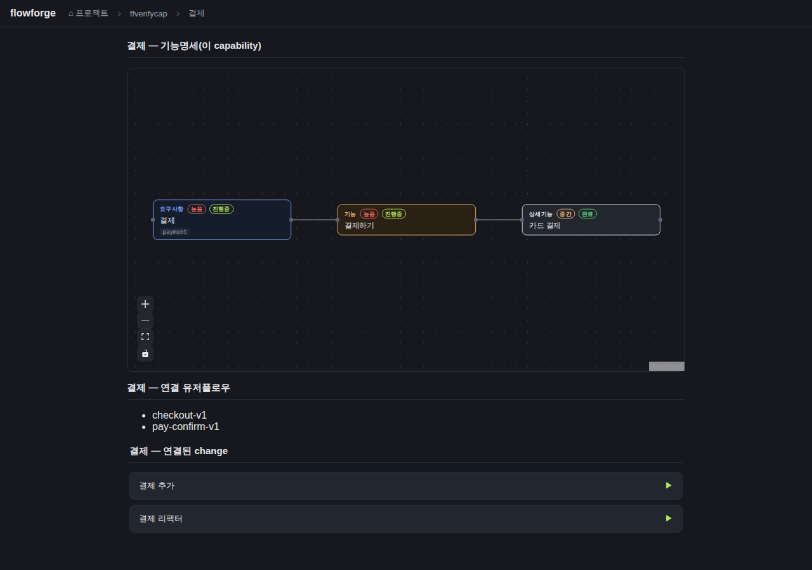
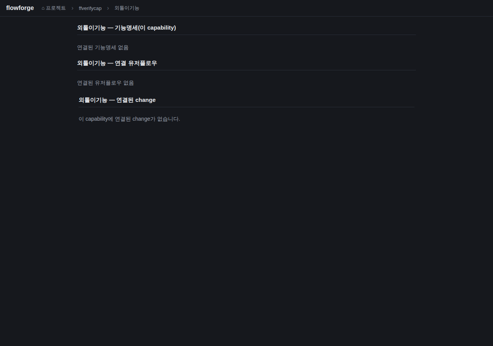
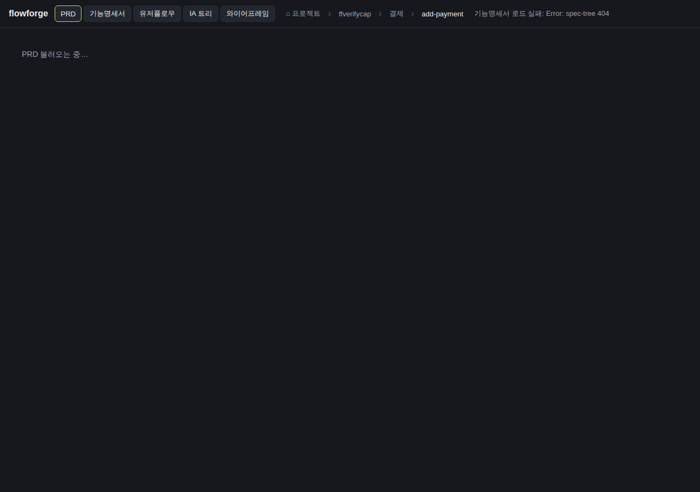

검증일: 2026-06-30T08:30:00+09:00 · 환경: server(jest+express, applicable), web(React/Playwright 실픽셀, applicable), android(SKIPPED 적용불가: 안드 소스 없음), ios(SKIPPED macOS 필요) · run: run-20260630-0830
PASS 9 · FAIL 0 · 검증 안 함 0 · SKIPPED 0
| Requirement | Scenario | Layer | 검증 수단 | 탐지 근거(basis) | 결과 | 증거 |
|---|---|---|---|---|---|---|
| capability 단위 종합 상세 조회 (GET /api/projects/:project/capabilities/:cap) | 종합 상세 200 반환 (key/koreanLabel/features/userFlows/changes) | server | 런타임 curl(픽스처 ffverifycap/payment) status=200 + 구조 검증 + jest projects.test | express + jest(server/package.json test) | ✓ PASS | — |
| capability 단위 종합 상세 조회 (GET /api/projects/:project/capabilities/:cap) | features 서브트리는 capability 일치 가지만 포함 | server | 런타임 curl: payment features labels=[결제], catalog 제외 확인 + jest (a)케이스 | express + jest | ✓ PASS | — |
| capability 단위 종합 상세 조회 (GET /api/projects/:project/capabilities/:cap) | 유저플로우는 `> capability:` 마커로 연결 | server | 런타임 curl: userFlows=[checkout-v1,pay-confirm-v1], browse-v1(catalog) 제외 + jest (b)케이스 | express + jest | ✓ PASS | — |
| capability 단위 종합 상세 조회 (GET /api/projects/:project/capabilities/:cap) | 연결 0개여도 빈 구조로 200 | server | 런타임 curl(lonely) status=200 + 빈 구조 + jest (d)케이스/라우트 빈구조 | express + jest | ✓ PASS | — |
| capability 단위 종합 상세 조회 (GET /api/projects/:project/capabilities/:cap) | 경로 조작 차단 (no-traversal) | server | 런타임 curl(..%2F..%2Fetc) + jest 경로조작 케이스 | express + jest | ✓ PASS | — |
| capability 단위 종합 상세 조회 (GET /api/projects/:project/capabilities/:cap) | 존재하지 않는 project는 safe-4xx | server | 런타임 curl(ghostproj) + jest 비프로젝트 케이스 | express + jest | ✓ PASS | — |
| capability 통합 drill-down 화면 (web) | capability 클릭 시 통합 화면 전환 (features+유저플로우+change co-locate) | web | Playwright 실픽셀: payment 클릭→cap-detail 섹션 3개+features 노드3+유저플로우 stem2+change 2 | React dist 정적서빙 + Playwright(chromium-1208) | ✓ PASS |  |
| capability 통합 drill-down 화면 (web) | 빈 섹션 명시 표면화 | web | Playwright 실픽셀: lonely 클릭→빈 섹션 3개 명시 메시지 | Playwright | ✓ PASS |  |
| capability 통합 drill-down 화면 (web) | change 클릭 시 기존 5종 뷰 진입 보존 | web | Playwright 실픽셀: change 클릭→5종 탭(tab-prd) 노출=views 단계 진입 | Playwright | ✓ PASS |  |
| Requirement | null | 빈값 | 잘못된타입 | 경계값 | 에러경로 | 동시성 | 대량 | 특수문자 | 판정 |
|---|---|---|---|---|---|---|---|---|---|
| capability 단위 종합 상세 조회 (GET /api/projects/:project/capabilities/:cap) | ✓ | ✓ | ✓ | N/A | ✓ | N/A | N/A | ✓ | ✓ 충분 |
| capability 통합 drill-down 화면 (web) | ✓ | ✓ | N/A | N/A | ✓ | ✓ | N/A | N/A | ✓ 충분 |
✓=covered · N/A=해당없음(사유 hover) · ✗=missing. happy-path만이면 검증 불충분 → 최종 FAIL 차단.
| Layer | 상태 | ran | passed | failed | 근거/사유 |
|---|---|---|---|---|---|
| server | ✓ PASS | 6 | 6 | 0 | 런타임 curl 6 scenario + jest 단위/통합 전부 PASS |
| web | ✓ PASS | 3 | 3 | 0 | 통합 화면 co-locate·빈 섹션 명시·5종 뷰 진입 실픽셀 관찰. pageerror 0. (네트워크 404 1건=/api/docs/ffverifycap/planning-prd, 기획 PRD 미작성 프로젝트의 정상 동작이며 catch로 '없음' 처리 — 종합 엔드포인트는 200, 앱 JS 에러 아님) |
| android | – SKIPPED | 0 | 0 | 0 | 적용 불가 |
| ios | – SKIPPED | 0 | 0 | 0 | macOS 필요 |
✓ PASS 통과
archiveGate.open = true (PASS일 때만 true). verify.json이 이 값을 archive 게이트에 전달.
{kind=link}
{kind=link}
{kind=link}